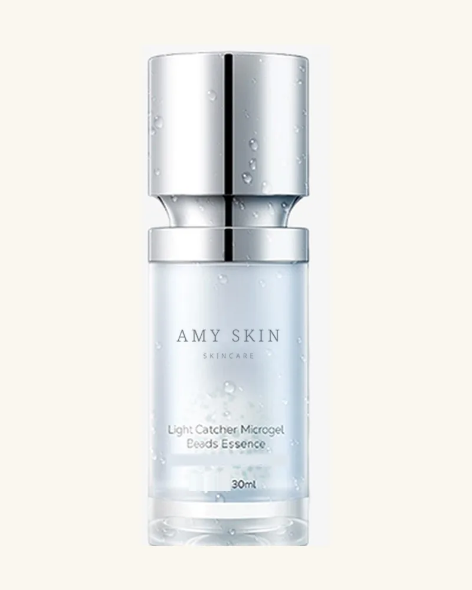

AMY SKIN
Dirección elegida: negro y dorado. Un wordmark serif refinado y con presencia, una marca gota-A en dorado champán y una paleta de negro puro y dorado. Herencia premium de cuidado de la piel, sin género, y diseñada para resistir en envases pequeños.

Logo principal: marca + wordmark
Archivo: assets/img/logo-e.svg — fondo transparente. La marca gota-A es siempre dorado champán #C9A86A; el wordmark es oscuro: usa este archivo solo sobre fondo claro (paneles blancos o crema, envases claros). El wordmark es un logotipo dibujado a medida, no una fuente estándar: Letras ajustadas a mano a partir de un esqueleto serif de alto contraste: la «A» tiene un ápice más alto y afilado y un travesaño arqueado que evoca la marca de gota; M / Y / S / K / I / N tienen peso y proporción individuales, y cada par de letras tiene kerning manual (AM, MY, SK, KI, IN). Está convertido a trazados: nunca lo vuelvas a componer; usa siempre el archivo.
Colores: seis
Regla: el wordmark aparece solo como wordmark oscuro sobre fondo claro (archivo assets/img/logo-e.svg) o en blanco crema #F5EFE6 (archivo invertido assets/img/logo-e-rev.svg) sobre negro. La marca es siempre dorado champán #C9A86A. Nunca rosa, nunca ningún otro color, nunca sobre un fondo recargado. El producto, su fórmula y su envase aportan el color; el logo se queda en estos seis.
Línea fina dorada: rgba(201,168,106,.25) — 1 px. Úsala para bordes de tarjetas, divisores de sección y contornos de botones sobre negro. Es el único grosor de línea dorada; nunca uses una línea dorada más gruesa para divisores de cuerpo.
Fuentes
| Uso | Fuente | Ajuste |
|---|---|---|
| Wordmark | Logotipo dibujado a medida (esqueleto serif de alto contraste, ajustado a mano) | Mayúsculas con kerning por pares; ápice de la «A» + travesaño arqueado que evoca la marca de gota; sublínea «SKINCARE» con espaciado, dorado champán; línea fina dorada debajo |
| Encabezados del sitio web | Cormorant Garamond, Light 300 | Tipo oración, blanco crema #F5EFE6 sobre negro |
| Texto de cuerpo | Arial / Helvetica, Regular 400 | Blanco crema #F5EFE6, 16 px / 1.75 |
| Pies y reglas | Arial / Helvetica, Regular 400 | Secundario #B8B0A4, mayúsculas con espaciado |
Los encabezados usan Cormorant Garamond Light 300, cargada desde Google Fonts; los archivos autoalojados assets/fonts/cormorant-garamond-500.woff2 y -600.woff2 cubren otros pesos en otras páginas. El wordmark de los archivos del logo está dibujado a medida y convertido a trazados, así que se ve igual en todas partes, incluidas las pruebas de impresión; nunca debe recomponerse a partir de la fuente.
Espacio libre y tamaño mínimo
Espacio libre: mantén una altura de mayúscula «x» vacía en los cuatro lados del logo, donde x = la altura de la «A» mayúscula. Nada — ni texto, ni regla, ni borde de imagen — entra en el espacio libre.
x = altura de mayúscula de la «A», en todos los lados
Tamaño mínimo: 20 mm de ancho en impresión / 100 px de ancho en pantalla, tanto para la variante principal como para la apilada. La marca sola puede usarse hasta 16 px (favicon, tapa de frasco). Nunca uses el wordmark por debajo del tamaño mínimo.
Escala de tamaños (digital): 

 ✕ 60 px: demasiado pequeño, no usar (usa solo la marca)
✕ 60 px: demasiado pequeño, no usar (usa solo la marca)
Horizontal, invertida, apilada y marca
Principal: composición horizontal
Archivo: assets/img/logo-e.svg. Marca dorada + wordmark oscuro sobre fondo claro, una sola composición.
Invertida
Archivo: assets/img/logo-e-rev.svg — Wordmark blanco crema #F5EFE6, marca dorada, solo para fondos #0A0908, envases oscuros y cajas oscuras. Nunca uses el archivo invertido sobre fondo claro.
Cuándo usar cada una: usa el archivo invertido solo sobre negro: encabezado y pie del sitio web, áreas negras de hero y CTA, envases negros, cajas oscuras. Usa el archivo principal solo sobre fondo claro: paneles blancos o crema, envases claros, impresión sobre papel claro. El espacio libre (una altura de mayúscula «x» en todos los lados) y el tamaño mínimo (20 mm en impresión / 100 px en pantalla) son iguales para ambas versiones.
Variante apilada: para envases estrechos
Archivo: assets/img/logo-e-narrow.svg — marca sobre el wordmark, para caras de envase de menos de 90 mm de ancho, es decir, tubos y sobres de mascarilla. En el resto, usa la versión principal. Nunca comprimas ni estires la versión principal para que encaje.
La marca sola


Archivo: assets/img/mark.svg (dorada) y assets/img/mark-navy.svg (monocolor oscura). La gota que se lee como una «A». Úsala sola para favicon, avatares sociales, tapas de frascos y sellos: en cualquier lugar donde el wordmark completo sea demasiado pequeño. La marca dorada es la predeterminada; la marca oscura monocolor es solo para impresión monocolor sobre fondo claro, nunca sobre negro.
Sí: una sola composición · mantén el espacio libre · usa la variante apilada en envases estrechos · usa la invertida sobre negro · usa solo la marca en tamaños pequeños. No: recolorear la marca · reespaciar o recomponer el wordmark · estirar, perfilar o sombrear el logo · añadir otro motivo · añadir rosa · colocarlo sobre un fondo recargado · usar el wordmark por debajo del tamaño mínimo.
La marca en cada envase
Renders de producto: el nombre de tu marca impreso en el envase, recto, completo, nunca recortado. Variante apilada en tubos y sobres de mascarilla, composición principal en el resto. Los 12 renders siguientes son ejemplos: 34 fórmulas destacadas de una biblioteca de más de 10,000. Ver las 34 fórmulas destacadas →





Regla de etiqueta: el nombre de marca es la única marca en el envase. El nombre del producto, el formato y el tamaño van debajo, en mayúsculas pequeñas con espaciado (secundario #B8B0A4 sobre fondo oscuro). Ninguna otra marca, ningún texto en chino en el envase.
Esquema de color del sitio web (según esta VI)
--ink: #0A0908; /* hero black — header, hero, CTA, large dark areas */ --gold: #C9A86A; /* accent — mark, hairlines, buttons on black */ --bg: #0D0B09; /* page black background */ --card: #181310; /* cards & panels on black */ --text: #F5EFE6; /* cream white — primary text on black */ --muted: #B8B0A4; /* secondary text on black */ --line: rgba(201,168,106,.25); /* gold hairline — card borders, dividers, button outlines */
El encabezado, el hero y el CTA final son #0A0908 con el logo invertido (blanco crema): el negro se usa con audacia, en grandes áreas oscuras, para que el blanco crema y el dorado lean como contraste real. Los botones principales sobre negro usan un degradado dorado metálico vertical (#D8BC7E → #C9A86A) con texto negro; los botones fantasma son transparentes con borde de línea fina dorada rgba(201,168,106,.25) y texto blanco crema; los enlaces son dorado champán #C9A86A. Los encabezados son Cormorant Garamond Light 300 en blanco crema #F5EFE6; el texto de cuerpo es Arial / Helvetica en blanco crema #F5EFE6 a 16 px / 1.75; el texto secundario en #B8B0A4. Las tarjetas de producto mantienen su fondo crema con borde de línea fina dorada, para que las fotos de producto se vean tal como se tomaron. El botón de WhatsApp mantiene el verde de WhatsApp: es un botón funcional de canal, no un color de marca.
Archivos del logo
| Archivo | Uso |
|---|---|
assets/img/logo-e.svg | Logo principal: composición horizontal, marca dorada + wordmark oscuro, transparente; solo fondo claro |
assets/img/logo-e-rev.svg | Logo invertido: wordmark blanco crema + marca dorada, solo fondos #0A0908 |
assets/img/logo-e-narrow.svg | Variante apilada: marca sobre el wordmark, envases de menos de 90 mm de ancho (tubos, sobres de mascarilla) |
assets/img/mark.svg | Marca gota-A sola, dorada: favicon, avatares, tapas, sellos |
assets/img/mark-navy.svg | Marca gota-A sola, monocolor oscura: solo impresión monocolor sobre fondo claro |
El logo anterior (Dirección E, sans-serif espaciada) está archivado en assets/brand/archive-logo-e/ y ya no está en uso. Contacto: WhatsApp +86 189 2882 3858 · info@amyskinoem.com · Descargar el kit estándar de VI →